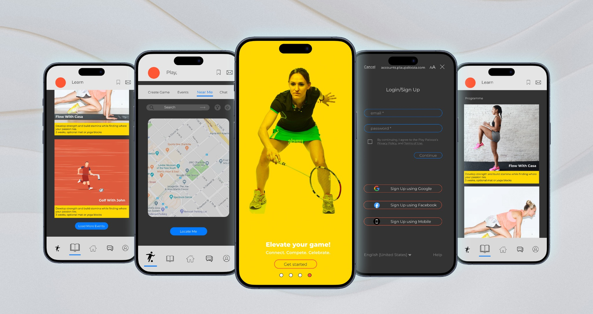
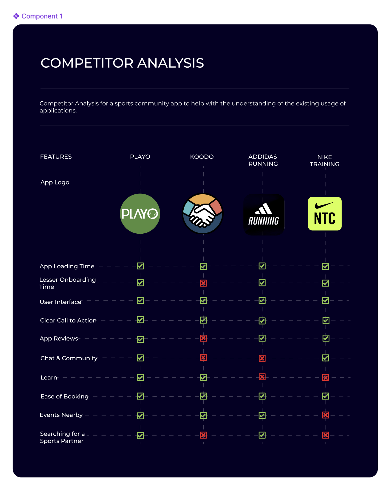
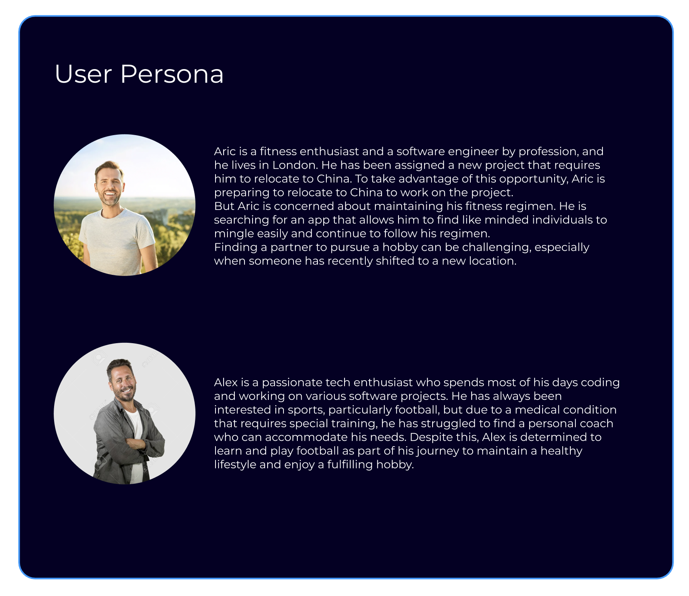
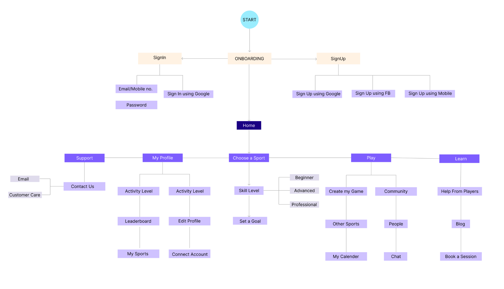
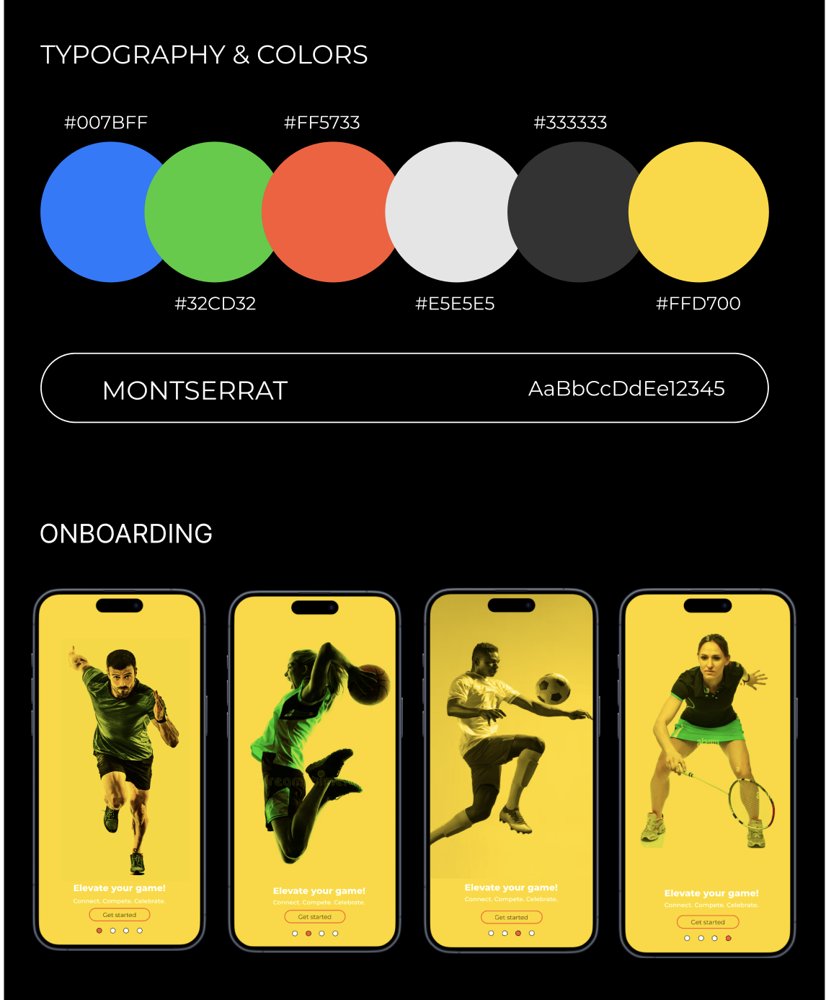
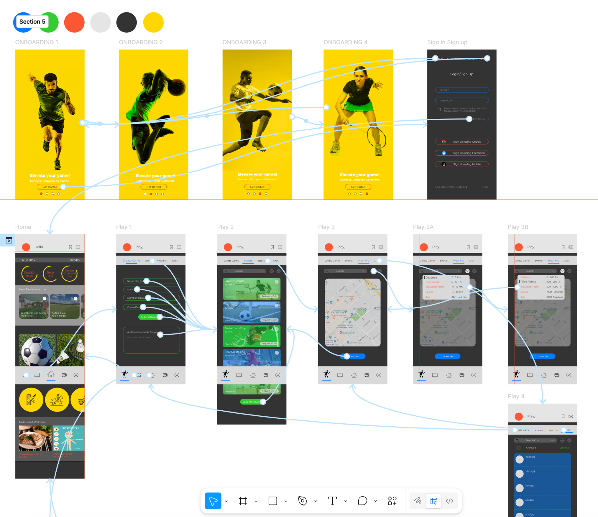

Play Palooza
A sports community app designed to help people find activities, connect with players, create games, and stay active after moving to a new place.
Play Palooza is an in-progress freelance UX project. My role has focused on shaping the product from the research side through to early interface design: understanding user needs, structuring the app, mapping the main flows, and building a high-fidelity direction in Figma.
TypeFreelance Project
StatusIn Progress
Duration6 Months
TimelineOctober 2023 – March 2024
Project Snapshot
RoleUX Researcher · UX Designer
Client TypeFreelance sports community app concept
Duration6 Months · October 2023 – March 2024
ToolsFigma, competitor analysis, information architecture, persona development, mobile UI design
PrototypeView Figma Project
Project Overview
Play Palooza is a sports community app for people who want to stay active but struggle to find the right people, places, or sessions. The idea is to make it easier to choose a sport, find nearby activities, create games, connect with others, and keep learning.
Because the project is still in progress, the current work focuses on research, product structure, visual direction, and high-fidelity flow development.
Challenge
The challenge was that wanting to play a sport is often easier than actually joining one. People may be new to an area, returning to fitness, looking for a coach, or unsure where to find players at their level.
The app needed to feel simple on the surface, while still supporting several different tasks: joining a game, learning a sport, chatting, creating an event, and finding sessions nearby.
Research & Insights
I reviewed existing sports and fitness apps to understand what felt useful, what felt missing, and how users were guided into action. This helped shape the feature set around onboarding, event discovery, community, learning, and finding sports partners.
The strongest insight was that this should not just be another tracking app. The value is in helping people feel less alone when they are trying to join a sport or build a routine.


Information Architecture
The information architecture helped turn the idea into a usable product structure. I organised the app around the main actions: onboarding, choosing a sport, setting a goal, playing, learning, getting support, and managing a profile.

Visual Direction
The visual direction is energetic and sport-led, using strong contrast and bright accent colours. I wanted the onboarding to feel motivating, while the core screens feel more functional and focused.

High-Fidelity Prototype
The high-fidelity prototype brings the main flow together, from onboarding and sign-in to browsing sports, creating games, locating nearby players, and moving into chat. It is still evolving, but it shows the intended product experience more clearly.

Current Outcome
Play Palooza is still in progress. So far, the work includes competitor analysis, persona development, information architecture, visual direction, onboarding, and high-fidelity app flows.
The next step is to test the main tasks, tighten the booking and community flows, and continue refining the UI so the app feels easier and more confident to use.